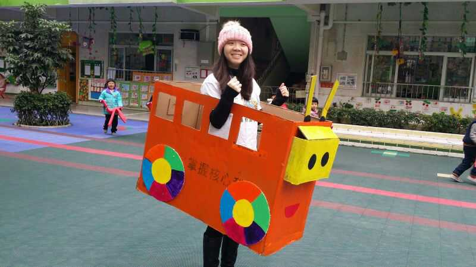

🚸 儿童安全步行活动
走进幼儿园和小学，教孩子安全出行。用孩子听得懂的语言讲解安全知识，同时也帮助家长理解如何与孩子沟通安全意识。
📍 2014年12月 · 江南幼儿园

这是我们组织的第一次活动，当时受到了幼儿园的热烈欢迎。在活动过程中，孩子们学习了过马路的三部曲。
志愿者们也非常积极，制作了很多精美的小道具。
💡 作为翻译家的作用
通过这个活动之后的余温，以及活动情况的广播，让家长更加重视：即使是低龄儿童，沟通互动也都是非常重要的。
📍 2017年12月 · 儿福幼儿园

在之前"儿童步行安全活动"成功经验的影响下，由幼儿园主动推荐，我们前往周边的姐妹幼儿园开展了同类型的活动。
志愿者们将悉心保存、维护的小道具都一并带上，继续传递这一种爱心的行为。
他们表示，举行公益活动不仅是为了受益方和受助方，更是为了提升自己：
- 锻炼了与陌生人沟通交流的技能
- 锻炼了活动的组织能力
- 最重要的是反思了自己作为父母，应该如何更好地与孩子沟通和理解
📍 2018年1月 · 蒋光鼐纪念小学
我们将之前在幼儿园成功组织"儿童安全步行活动"的经验带到小学，也是一个全新的尝试。
对于小学生来说，基本的过马路安全守则他们已经知道了。要如何让这个活动办得更加有趣、让小学生更加投入？这需要志愿者准备更多精彩的互动游戏，以比赛的形式去开展。
这个活动的关键是邀请了家委会成员共同组织。
这些家长在参加完活动后，会发现同自己的孩子有了进一步深层次的交流，而不再一味是那种权威式的家长养育方式。他们可以沟通互动，甚至进行平等地位的对话，从而看到孩子成长、成熟、有思考的一面。
💡 Mel的翻译
儿童安全步行活动中，我扮演的"翻译家"角色：
• 把安全知识翻译成孩子能理解的语言：用游戏、道具、比赛，让枯燥的规则变得有趣
• 把家长的角色翻译成新的样子：不是高高在上的教育者，而是可以平等交流的陪伴者
• 把活动的意义翻译给家长看：不仅是孩子学到了安全知识，更是家长学会了如何与孩子沟通
从幼儿园到小学，从传授知识到家委会参与，每一次都是"翻译方式"的升级。